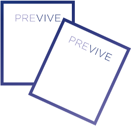

August 18, 2008
He faces the challenge of balancing demanding class work with around the clock networking events. Drinking requires two days to recover.
September 27, 2008
He becomes determined to find a preventive of hangovers.
October 27, 2008
The inconvenience, cost and potential health risks associated with the existing off the shelf solutions drives Ian to craft his own answer to the hangover. The concept for Previve is born.
Previve’s development consisted of
four key goals :
01
Eradicating hangover symptoms to the greatest extent possible.
October 23, 2009
You know how drinking makes you feel tired, but used to make you feel energetic? Alleviating this issue was as important as minimizing hangovers, but it proved much more difficult. However, by improving the absorbability of ingredients and by introducing a newly developed form of a key vitamin, the formula became successful at substantially reducing the hangover you feel as you drink.
03
Counteracting long-term cellular damage
04
Make the blend more user friendly.

November 14, 2012
After four years of meticulous research, consultations with Columbia Medical School and hundreds of informal trials, we present to you Previve—a labor of love, and what we believe to be the most effective and userfriendly hangover treatment ever developed.

August 17, 2008
Ian attends Columbia Business School.
October 10, 2008
Many of the all-in-one pills and drinks prove ineffective. Some products do work but they also have their drawbacks. The formulas require Ian to remember to take approximately ten pills or three drinks throughout the night and consisted of 50,000% of the daily vitamin B1 recommended dosage, which felt wrong.

October 25, 2008
Ian realizes he’s spending too much money on hangover remedies. Because many pills or drinks are required to be effective, each night costs $4–$8 and adds up.
February 22, 2009
This objective was thoroughly achieved with blends of natural ingredients that had been shown in academic studies to be successful at combating the effects of alcohol.
02
Minimizing the hangover you feel while you drink.
September 17, 2010
After a year of poring over innumerous scientific studies and testing individual ingredients, Ian developed an antioxidant blend that should help reduce the impact from free radicals that results from alcohol consumption.

July 9, 2012
By licensing a patented extended-release process the formula was adapted to a single dosage.
October 4, 2012
With the help of industrial designers, packaging was improved so the product would be available in convenient, pocket-friendly, pouches.